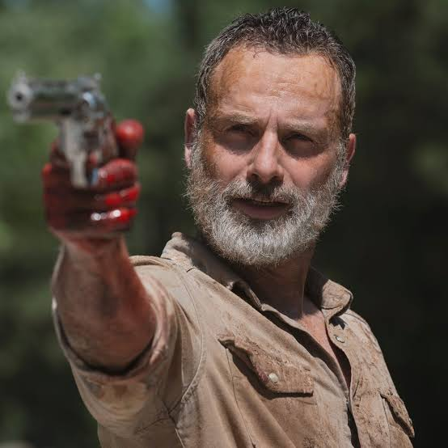
Responsabilidad
Rick Grimes
Un ex-policía que intentará proteger a su familia a toda costa y mantener unido al grupo en un mundo donde ya no hay reglas.
El mundo ha cambiado. Sus habitantes también.
Los muertos caminan. Los vivos deciden hasta dónde están dispuestos a llegar para sobrevivir. Once temporadas cargadas de acción, drama, terror y decisiones imposibles.
Explorar temporadasLos supervivientes
Un error puede costar caro. Sus distintas formas de afrontar las situacione y superar el miedo son parte del atractivo de la serie.

Responsabilidad
Un ex-policía que intentará proteger a su familia a toda costa y mantener unido al grupo en un mundo donde ya no hay reglas.
Instinto
Un cazador hábilidoso pero con un pasado oscuro. De carácter reservado pero gran lealtad, se convertirá en la mano derecha del grupo.
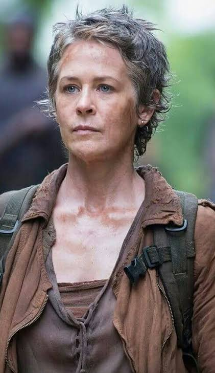
Transformación
Una ama de casa, víctima de abusos. Aún sufrir un pasado horrendo por parte de su marido, es capaz de superarlo y tomar decisiones brillantes que salvarán al grupo.
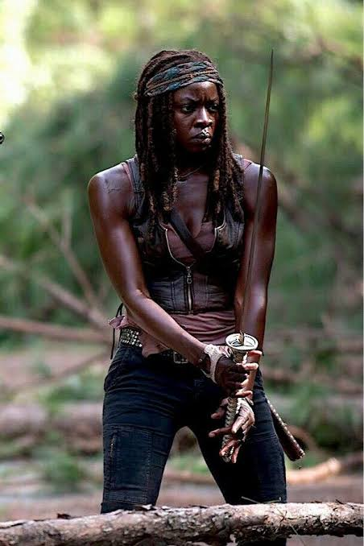
Determinación
Una superviviente desconfiada que lo ha perdido todo. Aún haber sufrido un trauma brutal, debe encontrar el equilibrio entre protegerse y volver a confiar.
El recorrido
Si quieres saber más sobre una temporada, desplegala para descubrir los puntos iniciales y algunos de los personajes que se incorporan.
Las siguientes explicaciones de las temporadas pueden contener spoilers.
Rick Grimes despierta de un coma en el hospital y al salir encuentra un mundo devastado y plagado de zombies. La búsqueda de su familia lo lleva hacia Atlanta donde se encontrará con un grupo de supervivientes.
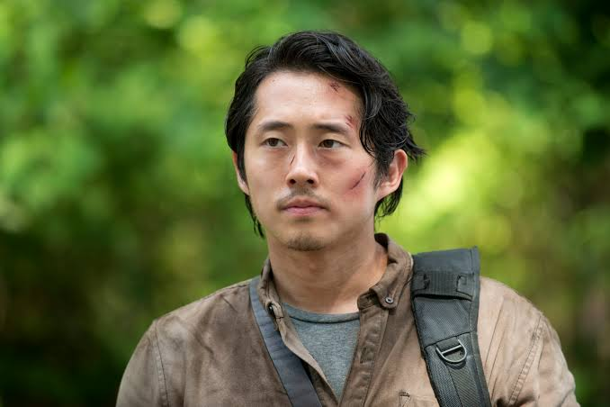
Un joven ingenioso y rápido para encontrar salidas en las situaciones más peligrosas.
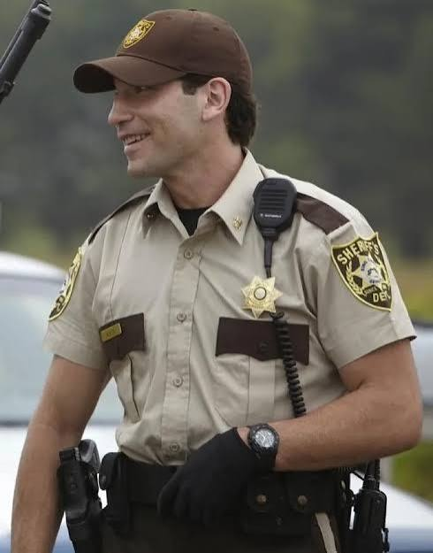
Ex-policía compañero de Rick y superviviente nato. Oculta un gran secreto que traerá graves consecuencias.
El grupo encuentra una granja habitada por una familia que parece ofrecer un respiro al apocalipsis. La búsqueda de una persona desaparecida y las diferencias en cómo sobrevivir ponen a prueba la convivencia del grupo.
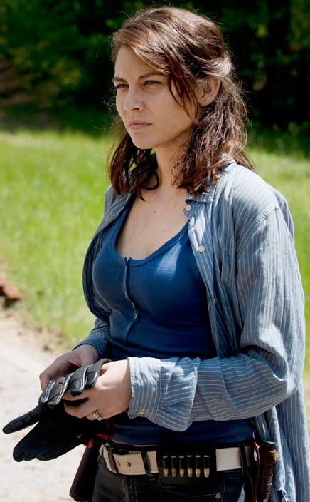
Una joven de la granja, hija de Hershel con mucho carácter y determinación.
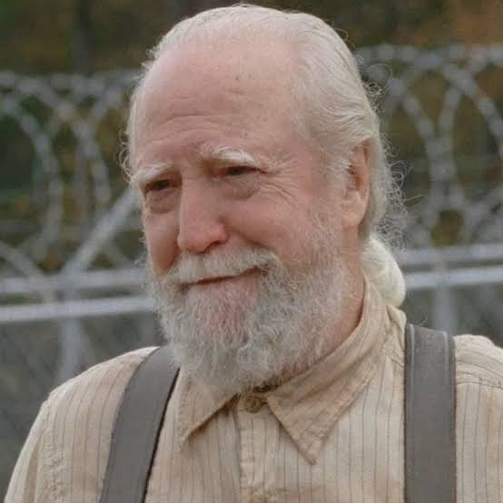
Es el propietario de la granja, firme en sus convicciones de salvar a los muertos.
El grupo encuentra una prisión que se convierte en una oportunidad para establecer un hogar seguro. Cerca de la cárcel, hay una población, Woodbury, que tiene otra forma de organización bajo un liderazgo que esconde muchas amenazas.
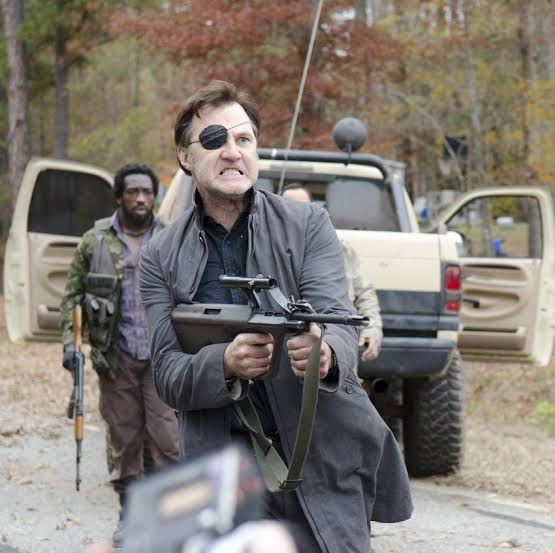
Un hombre carismático y a su vez muy autoritario. Es el lider de Woodbury.
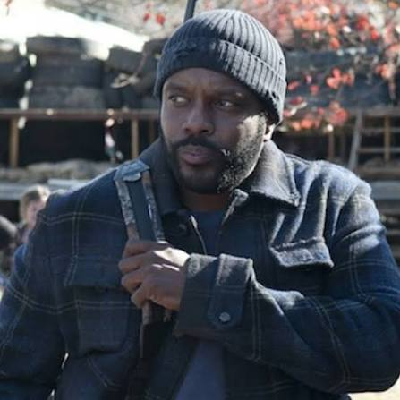
Un superviviente que intenta conservar su humanidad, a pesar de encontrarse entre dos bandos.
La vida en la prisión afronta varias amenazas. La seguridad de la carcel se pone a prueba por culpa de una epidemia y por un antiguo adversario.
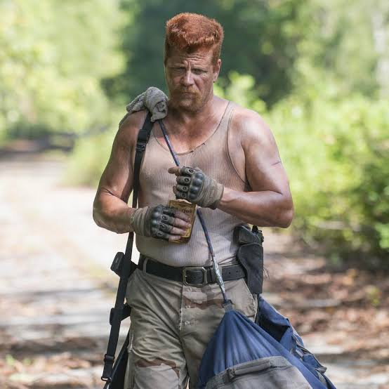
Un antiguo militar decidido a completar su misión.
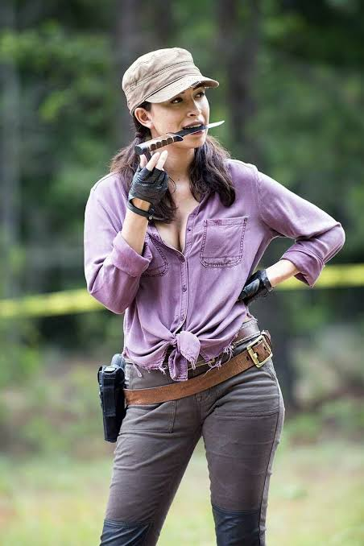
Práctica y preparada para afrontar el peligro, esta dispuesta a completar la misión junto a Abraham.
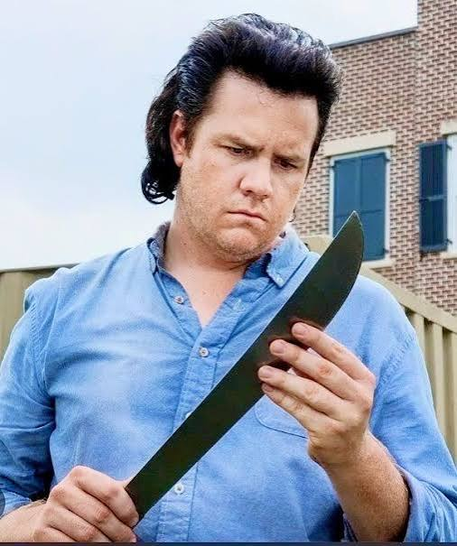
Sus conocimientos se convierten en su principal recurso para sobrevivir.
La experiencia en Terminus refuerza la desconfianza del grupo. Tras nuevos peligros en el viaje, Alexandria presenta un nuevo reto, volver a vivir en comunidad pero sin bajar la guardia.
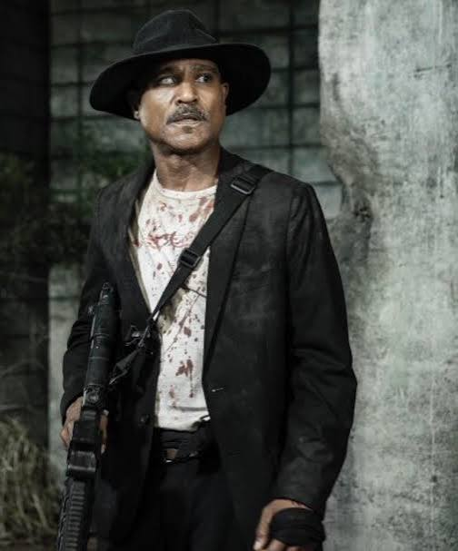
Un sacerdote marcado por el miedo y la culpa.
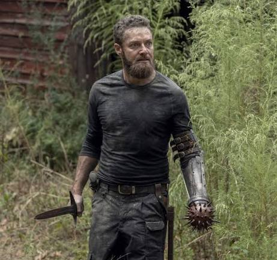
Un reclutador que busca personas para Alexandria.
Alexandria debe demostrar que puede defenderse. El contacto con otras comunidades amplía las posibilidades del grupo, pero también lo enfrenta a una organización muchísimo más poderosa.
Un hábil explorador que viene de la comunidad de Hilltop.
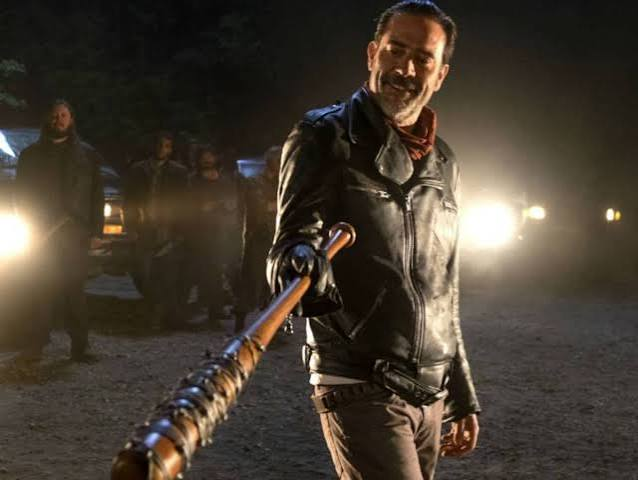
El líder de los Salvadores, que impondrá sus propias reglas.
El dominio de los Salvadores transforma la vida de las comunidades. Mientras unas personas aceptan las nuevas condiciones, otras buscan aliados para recuperar su independencia.
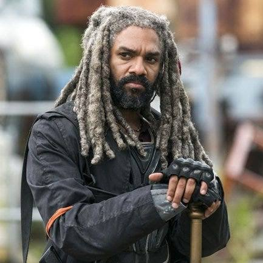
El líder de una comunidad cercana a Alexandría llamada el Reino.
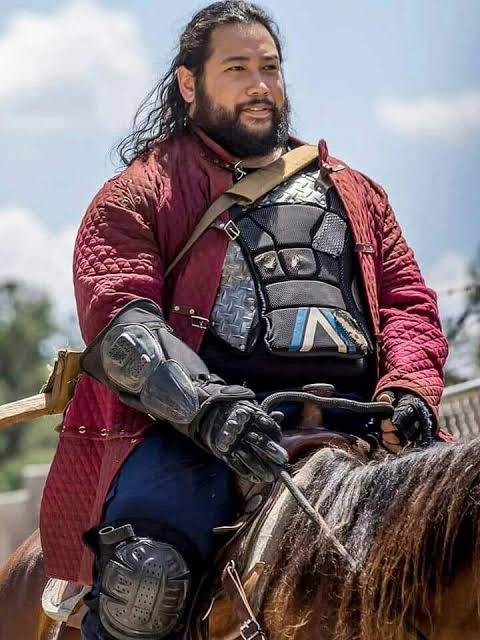
El fiel compañero de Ezekiel, con un carácter cercano y simpático.
La alianza de comunidades se enfrenta a los Salvadores. Esto obligará a decidir qué límites pueden cruzarse y qué clase de sociedad debería existir cuando termine la lucha.
Un superviviente con conocimientos médicos.
Su relación con los Salvadores pone a prueba la confianza.
La reconstrucción exige cooperación entre comunidades que todavía arrastran heridas. Con el paso del tiempo, aparece una amenaza que cambia la forma de entender a las hordas de caminantes.
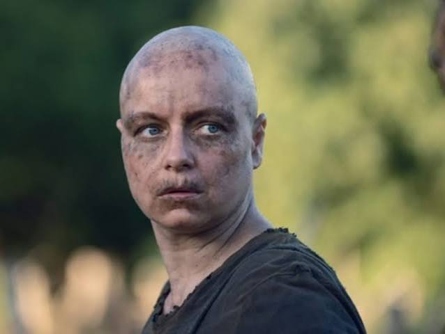
La líder de los Susurradores y con una forma de vida brutal.
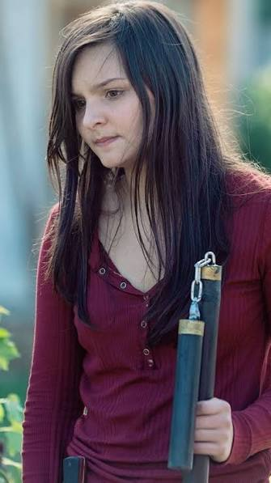
Una joven criada bajo las reglas de los Susurradores.
La tensión con los Susurradores afecta a las comunidades. El miedo, los recuerdos y el deseo de venganza condicionan las decisiones de estas, mientras nuevos encuentros abren otras posibilidades.
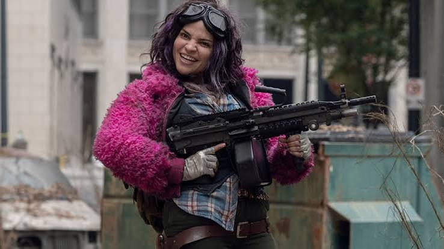
Una superviviente expresiva y acostumbrada a la soledad.
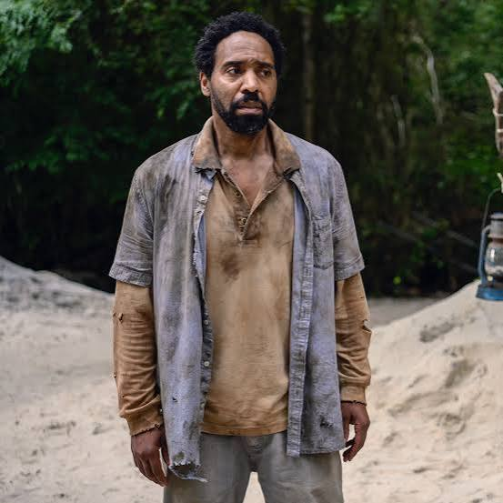
Un desconocido que busca regresar con su familia.
La escasez de alimentos obliga a correr nuevos riesgos. La Mancomunidad ofrece recursos y normalidad a primera vista, pero también traerá desigualdades y conflictos sobre quién merece estar protegido.
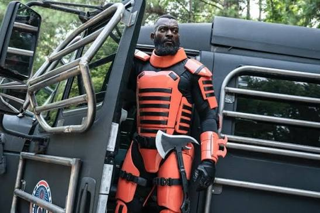
El responsable militar de la Mancomunidad.
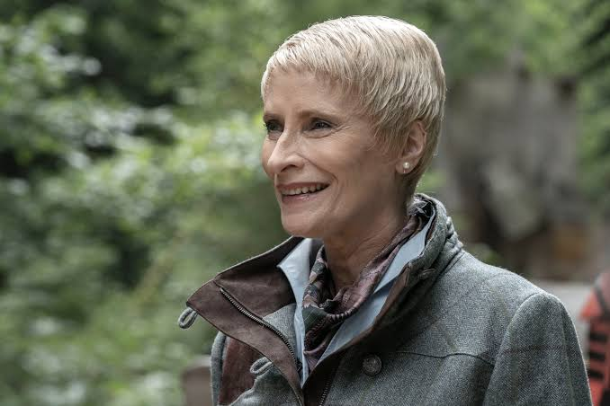
La gobernadora de una sociedad que presume de orden.
Vale la pena
Cuando empiezas a ver the Walking Dead te sientes atrapado por un mundo post-apocalíptico con el que la mayoría de personas han fantaseado. Un mundo plagado de zombies lentos, que inicialmente pueden asustar o causar miedo pero al que te puedes enfrentar si eres astuto e ingenioso. Sin normas, sin rangos, sin leyes, solo se trata de demostrar que puedes sobrevivir bastandote de tus conocimientos. Además, los escenarios que se recogen son muy similares a lo que nos podríamos encontrar si ocurriera algo similar en la vida real. Desconfianza, amistades, lealtad, todo se pone en juego y crean una novela visual que engancha al espectador.
Principalmente recomendaría la serie a todas aquellas personas que disfrutan viendo series de terror, aunque a medida que avanza, lo principal son las historias de los personajes y los dilemas morales que experimentan. Tiene muchos momentos de acción y tensión que te mantienen enganchado al televisor, aunque también se toma tiempo para desarrollar estos conflictos y las relaciones entre los personajes, por lo que te sientes más cercano a ellos y cada muerte genera muchas emociones.
La series contiene muchas situaciones de violencia, así como situaciones muy gore cuando los caminantes atrapan a alguien. Sus once temporadas también requieren su tiempo y algunas son más lentas que otras, pero entre la variedad se encuentra la mágia de esta serie.
Volver al inicio